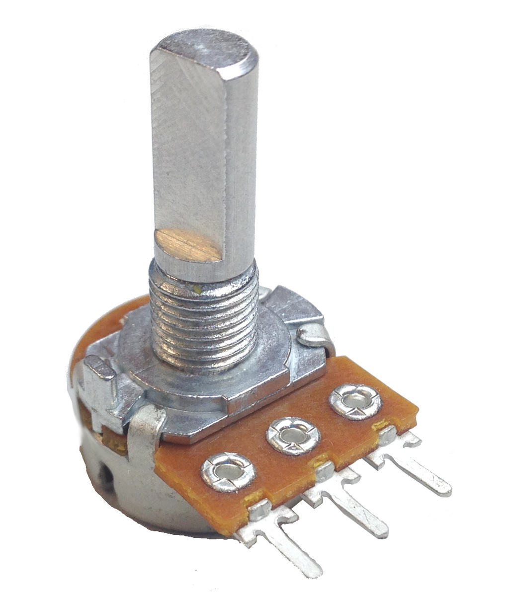
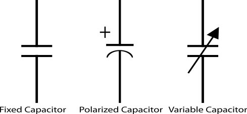
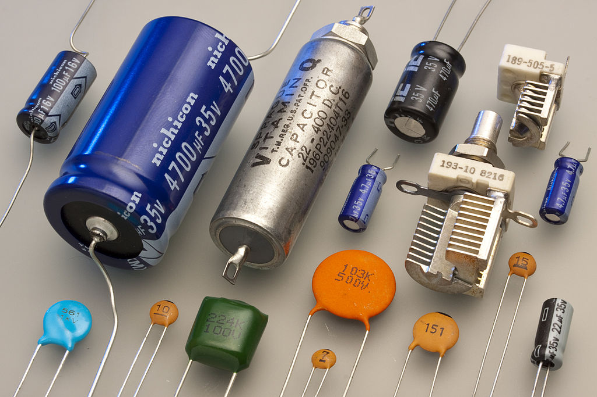
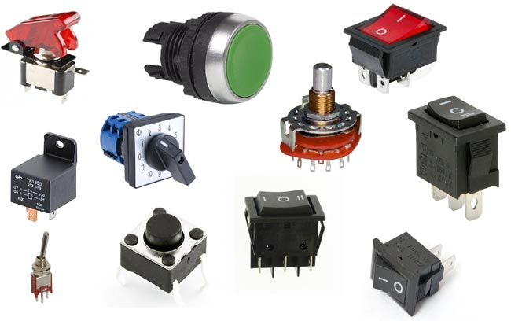
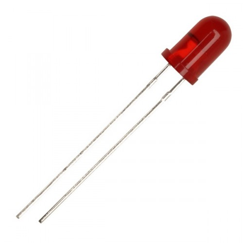
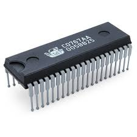
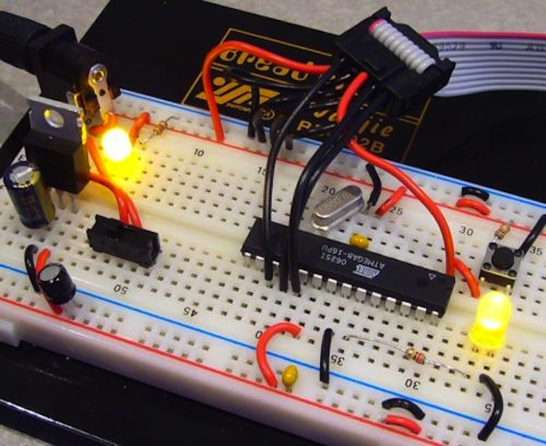
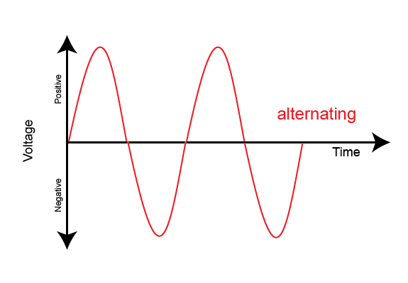
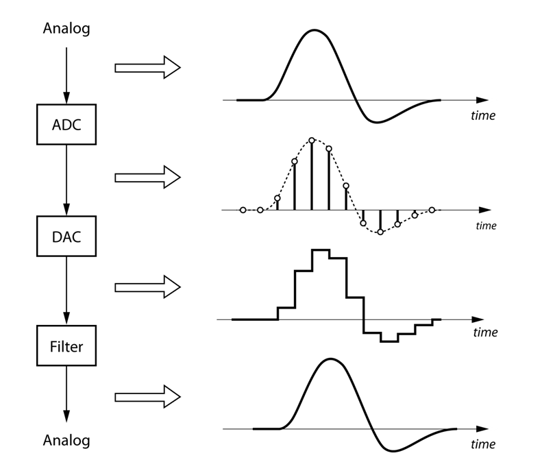
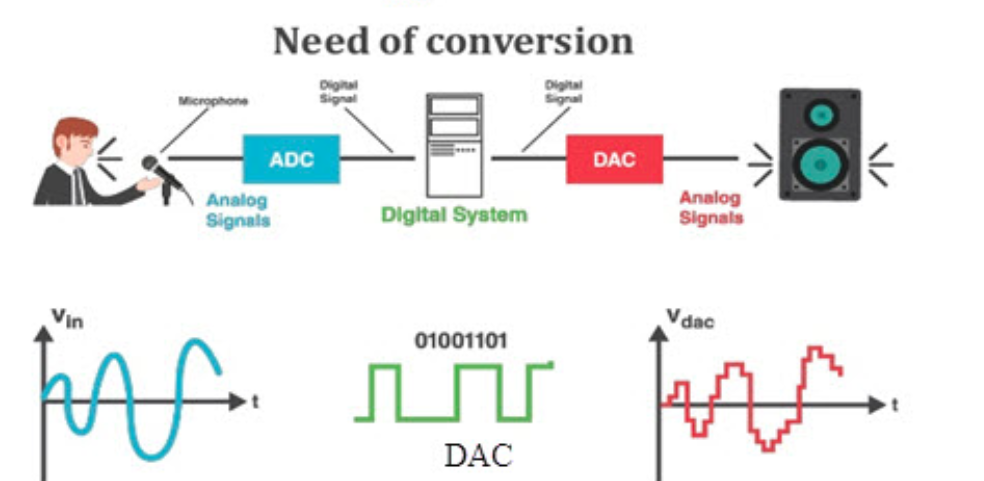

Week 4: Hardware
Hardware
Electric charges which is positive or negative move to produce electricity. Its movement is associated with the generation of electric field and the process is reversed.
Two main components are associated with electricity current and voltage (I and V)
current is measured in ampere or mA. Voltage is measured in Volts or mV
Circuits and Electronics
Electric circuit is a closed path that current flow through it. It contains different electrical components
- Resistor / Potentiometer (Variable resistor) Ohm or kilOhm


- Capacitors
Farad or micro Farad


- Inductor or Transformers Henry (H)


- Switches
Break or connect circuit


-
semiconductor (Electronics)
-
Diodes
Current move in one direction and prevented in the other direction




-
Transistors
3 Terminals component. Used in signal amplification switches Digital circuits


-
Integrated circuits
contains huge number of transistors and logic circuits


-
-
Wires and connectors

-
Boards
- Bread board

- Printed circuit board


Measurement Instruments
- multi-meter

- function generator

- oscilloscope

Signal

Varying voltage over time
World is continuos or analog but We have limited memory to store signal value continuously. So we need to make it limited or digital. We need to sample the signal to get a good representation of the signal. 

Arduino Programming
Arduino is programmed using C++ language. It is already equipped with essential built in function to handle simple interfacing with electronic devices
Variables
- Variables in C/C++ have different data types
int myVariable; //Define a variable myVariable with type int
- array is a group of values
int a[10]; //Array of 10 integers
Constants
- Predefined variables
- Example HIGH, LOW, INPUT, OUTPUT
Functions
- subroutine that encapsulate some calculations
- Builtin functions
pinMode(pin, mode);
digitalWrite(pin);
analogRead(pin);
delay(ms);
- User defined functions
- [type] [name](parameters)
int add(int x, int y) { int z = x + y; return z; }Control structures
- Branching due to a condition
- if
- if, else
- switch , case
example
/*
Pushbutton sketch
a switch connected to pin 2 lights the LED on pin 13
*/
const int ledPin = 13; // choose the pin for the LED
const int inputPin = 2; // choose the input pin (for a pushbutton)
void setup() {
pinMode(ledPin, OUTPUT); // declare LED pin as output
pinMode(inputPin, INPUT); // declare pushbutton pin as input
}
void loop(){
int val = digitalRead(inputPin); // read input value
if (val == HIGH) // check if the input is HIGH
{
// do this if val is HIGH
digitalWrite(ledPin, HIGH); // turn LED on if switch is pressed
}
else
{
// else do this if val is not HIGH
digitalWrite(ledPin, LOW); // turn LED off
}
}
- Looping
- for loop : for defined number of Instrumentations
- while loop : based on condition
example
/*
ForLoop sketch
demonstrates for loop
*/
void setup() {
Serial.begin(9600);}
void loop(){
Serial.println("for(int i=0; i < 4; i++)");
for(int i=0; i < 4; i++)
{
Serial.println(i);
}
}
Classes
User defined type contains members, methods, functions
Example
class MyClass
{
public:
MuClass(int pin);
void method1();
void method2();
private:
int member1;
};
Accessing members and methods using . operator Example
// Print is a method in class Serial
Serial.print();
A library is code was written by someone and we will use it (Re inventing the wheel )
To use library
//Include header file of the library
#include <file.h>
Markdown Documentation
Headers
-
Headers
# Header1
## Header2
### Header 3
For organizing your thoughts to main point with sub-points and so on.
-
Links
You can make hyperlink

or just put the link if no hyperlink
www.google.com
Example
visit this for more details.
-
Images

image must be in the same folder or directory and must be uploaded with the md file
Example
-
List
* item 1
* item 2
* item 3
Or
1. Item 1
2. Item 2
-
Code snippets
```c++
#include <iostream>
int main()
{
std::cout « “Hello, World!” « std::endl;
}
```
Lets see it
#include <iostream>
int main()
{
std::cout << "Hello, World!" << std::endl;
}